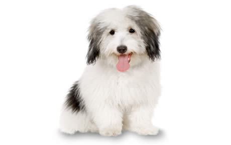

Coton de Tulear
Koton iz Tuleara je ljupki pratilac privržen gospodarima; dovoljno je miran i uravnotežen da bi živeo u kući, ali napolju iskazuje svu svoju snagu, jer tokom šetnji se nikada neće umoriti pre svog gospodara.
Tek odnedavno je poznat široj javnosti u Evropi i počinje da biva cenjen zbog svih pomenutih vrlina i zbog estetike svoga krzna neuporedive dlake.Koton iz Tuleara najpopularniji je u Francuskoj.
Koton je pas za stan, koji voli društvo, i ne treba ga dugo ostavljati samog da ne bi patio. Velika je maza i nije agresivan. Duge šetnje nisu neophodne, a dobro podnosi i vrućinu i zimu. Možete ga voditi i na more da pliva i na planinu, jer obožava sneg. Stabilne je i vedre naravi, pa je u svetu poznat pod nadimkom ‘’antistres pas’’, zbog rehabilitacije ljudi sa psihičkim problemima.